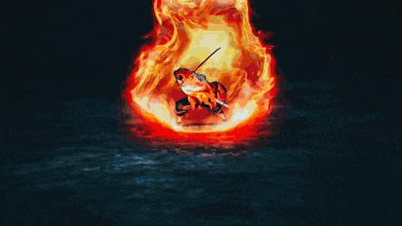

Кёджуро Ренгоку
Кёджуро Ренгоку (煉獄 杏寿郎 Rengoku Kyōjurō) - охотник на демонов, Столп пламени, состоявший в организации Истребителей Демонов. Центральный персонаж Арки Демонического поезда.
Внешность
Кёджуро - молодой высокорослый парень с крепким телосложением. Наиболее яркой особенностью его внешности являются ярко-желтые волосы с длинными прядями, переходящими, местами в красный цвет. Также его выделяют густые раздвоенные брови и широко распахнутые глаза.
Кёджуро носит более светлую, коричневую версию обычной формы Убийцы демонов. Поверх формы он носит хаори с пламенеподобным рисунком и выступами на подоле, которое когда-то носил его отец Шинджуро и, вероятнее всего, его предки. На ногах Кёджуро носит красные носки таби с желтым пламенем, извергающимся снизу вверх, с парой белых дзоури с красными ремешками.
Личность
Кёджуро - добрый и честный человек. Он весьма эксцентричен, склонен не сдерживать свои эмоции. Вместе с тем Кёджуро обладает непреклонным оптимизмом и колоссальной силой духа, привитой ему его матерью в молодом возрасте, что помогает ему не только находить в себе силы в сложных ситуациях, но и поддерживать окружающих. Кёджуро с большим энтузиазмом исполняет свой долг Столпа и Убийцы демонов. Основой его мировоззрения является привитая его матерью в детстве идея о том, что сильные люди обязаны защищать слабых. От отца же он унаследовал достигнутую в ходе тренировок дисциплинированность и непреклонность.
“Зажги огонь в своём сердце!”
История
Кёджуро Ренгоку родился в семье столпа пламени Шинджуро Ренгоку.
В детстве отец тренировал Кёджуро и его младшего брата Сенджуро искусству владения мечом для того, чтобы они могли пойти по его стопам и стать охотниками на демонов. В неизвестный промежуток времени когда Кёджуро ещё был мал , его мать Рука дала ему последнее наставление на то, чтобы он защищал по мере возможности слабых и не использовал свою силу в корыстных целях. После смерти Руки, отец Кёджуро начал пить и вскоре покинул пост Столпа пламени и прекратил тренировать сыновей.
Несмотря на это, Кёджуро, используя записи о техниках дыхания, самостоятельно овладел дыханием пламени и стал искусным мечником. После этого он достиг звания Столпа пламени, как его отец и их предки.
Впервые Кёджуро появляется во время собрания столпов, на котором решалась дальнейшая судьба Танджиро и Незуко Камадо, а также Гию Томиоки после событий на горе Натагумо. На собрании Ренгоку выступил против предложения Кагая Убаяшики, настаивая на казнь Танджиро Камадо.
Знакомство же героев со Столпом произошло во время миссии по выслеживанию демона, атакующего людей в поезде "Бесконечный". До нападения демона Танджиро сумел расспросить Кёджуро о Дыхании Бога Огня. Сам Столп сообщил, что впервые слышит о таком , но предложил Танджиро стать его учеником также предлагая ему свою защиту.
Находясь в поезде Кёджуро, вместе с другими пассажирами, попадает под действие магии демона Энму. Кёджуро приснились его воспоминания, и пока он был под действием техники , в его "cуть души'' вторглась девочка контролируемая Энму , попытавшись уничтожить ''ядро души'' , она ненароком разбудила инстинкты самосохранения Кёджуро , подвергшись атаке во сне он смог защитить себя и обездвижить противника в материальном мире , но Кёджуро не мог нейтрализовать девчонку , потому что у него не было причин убивать её.
Вырвавшись из под действия техники демона Кёджуро нанёс серию серьезных атак демону и чуть позже скоординировал работу отряда убийц демонов, в тоже время взяв на себя защиту большей части пассажиров поезда. Перед тем как поезд слетел с рельс Кёджуро использовал множества мощных техник дабы минимизировать урон пассажирам поезда.
После победы над Энму Кёджуро помог Танджиро остановить кровотечение а также сообщил что никто из пассажиров не погиб во время боя с первой низшей луной. Не прошло и минуты как в поле зрения появилась Третья Высшая Луна 3 Аказа , увидев раненного Танджиро демон попытался его устранить но столп вмешался и отсек часть руки высшей луны c помощью второго стиля дыхания пламени. Аказа похвалил клинок Кёджуро и предложил тому стать демоном , столп отказался но демон все же настаивал удивившись аурой Кёджуро. В конце концов Ренгоку отвергает предложение Аказы , разочаровавшись Аказа вступает со столпом в бой на протяжении которого пытался убедить Кёджуро стать демоном. В ходе боя Ренгоку получил множество тяжелых травм, позволивших демону нанести смертельный удар. Однако сил Кеджуро хватило на то, чтобы растянуть бой до восхода солнца, заставив сбежать Аказу с битвы. Расстроенный Танджиро использовал остаток сил на то , чтобы кинуть в демона свой клинок. Танджиро назвал Аказу трусом за то что он сбежал и объявил Кёджуро настоящим победителем битвы. Умирающий Кёджуро попросил Танджиро не кричать так громко , потому что у того могла открыться рана.
Перед смертью Кёджуро рассказал Танджиро о том, что он признал его сестру-демона Незуко как Убийцу демонов, а также дал последнее наставление Танджиро попутно советуя отправиться в поместье Ренгоку, чтобы найти там ответы на вопросы о дыхании Бога Огня. В последний миг своей жизни Кёджуро увидел силуэт своей матери , спросив справился ли он со своими обязанностями он получил положительный ответ своей усопшей матери.
Способности и сила
Как столп из Корпуса Истребителей Демонов, Кёджуро был очень сильным фехтовальщиком. Даже такие сильные демоны, как Аказа, высшая луна 3 и по совместительству четвертый по силе из всех демонов, признал силу Кёджуро. Аказа был так впечатлен силой Кёджуро, что даже предложил тому стать демоном, чтобы он мог превзойти свои человеческие пределы и стать сильнее, что он предлагал только мечникам, чьи способности, по его мнению, были доведены до совершенства. Аказа также похвалил его боевой дух и заявил, что он приближается к «высшей точке», что означало, что он был невероятно близок к получению Прозрачного мира (透 す き 通 と お る 世 せ か Sukitōru Sekai?), Если бы он успел пробудить свою Метку истребителей демонов. Его отец, Шинджуро Ренгоку, заявил, что после того, как его сын отказался от того, чему он учил его, Кёджуро самостоятельно тренировался до уровня столпа после прочтения учебника по стилю дыхания пламенем, книги, в которой было всего 3 тома.
Огромная сила: Как столп, который годами совершенствовал свою физическую силу, Кёджуро обладал удивительной силой, будучи способным размахивать катаной со скоростью быстрее, чем человеческий глаз может видеть, и ужасающей точностью во время боя. Кёджуро также обладал такой силой захвата, которая была способна удерживать Аказу, одного из сильнейших персонажей серии, высшую луну 3, несмотря на то, что его солнечное сплетение было пронзено ранее, это было до такой степени абсурдно, что Аказа выразил свое неверие и шок от силы, которую он описал как «невероятную».
Невероятная скорость и рефлексы: Кёджуро обладал настолько огромной скоростью и рефлексами, что даже обученный и весьма одарённый истребитель демонов, как Танджиро, не мог уследить взглядом за ним. Кёджуро мог даже вызвать тряску земли и чуть не сбить поезд с рельсов, двигаясь со скоростью быстрее, чем может видеть глаз. Его рефлексы были настолько быстрыми, что ему удалось отрезать руку Аказы за момент до того, как высшая луна собиралась убить Танджиро. Кёджуро также удалось не отставать от высокоскоростных техник Аказы, которые, как отмечал столп, быстрее, чем мгновение ока, иногда даже умудряясь опередить его. Сам Иноске Хашибира отметил, что Кёджуро был на совершенно ином уровне из-за его мощных атак и скорости. Феноменальная скорость движения и рефлексы Кёджуро даже удивили и впечатлили Акказу, который открыто выразил свое удивление.
Развитое зрение: Как и у других охотников на демонов, Ренгоку использует один из пяти основных органов чувств. У мужчины это зрение, что многократно было продемонстрировано в арке Бесконечный поезд. Сперва, когда проводник пробивал билеты Танджиро ощутил запах, а Ренгоку открыл глаза. Потом, когда давал совет юному Камадо как восстановить повреждённый сосуд. Кеджуро сказал вот оно, когда Танджиро нашел повреждения и восстановил. Такое чувство, что у столпа рентгеновское зрение. В аниме прекрасно продемонстрировали бой Ренгоку и Аказа, где первый использовал зрение. Кеджуро смог остановить демона когда тот собирался добить Танджиро. В бою столп быстро разобрался как атакует враг и мог уследить за его действиями. Глаза Ренгоку широко раскрытые, благодаря чему мужчина может замечать любое изменение. К примеру удары по воздуху Аказы. Также глаза Кеджуро всегда направленные в ту сторону, где стоит демон или соперник. Даже быстрое перемещение врага остаётся замеченным Ренгоку. Его глаза моментально переключаться на цель что уже поражает и приводит в недоумении как союзников, так и демонов.
Удивительная стойкость и выносливость: Кёджуро продемонстрировал сверхчеловеческую стойкость и выносливость во время сражений. В битве против Энму, когда он слился со всем поездом, он смог сдерживать его, и более того, давать отпор в 5 вагонах пассажирского поезда, не утомляясь. Наконец, ему удалось не отставать от своего самого сильного противника, Аказы, несмотря на физическое и моральное напряжение сверх его предела и получение множества мелких и смертельных ран, таких как разбитый глаз, сломанные ребра и поврежденные внутренние органы. Что наиболее впечатляюще, ему удалось удержать Аказу голыми руками, несмотря на то, что его жизненно важные точки, его солнечное сплетение, были пробиты рукой высшей луны. Несмотря на все его смертельные раны и травмы, он ни разу не вздрогнул и не показал признаков боли или агонии.
Тактический интеллект: Как фехтовальщик из рода пламенных столпов, Кёджуро, как и его отец, Шинджуро Ренгоку, был обучен боевым знаниям и тактике, а также имел доступ к записям предыдущих столпов пламени, хоть и не читал их. Во время битвы с Аказой он проявил проницательность. Например, после того, как в него попала техника Аказы «Разрушительное поражение цели: свободный стиль», он понял, что должен сражаться с близкого расстояния, дабы увеличить шансы на отрезание головы демона. Даже когда обычно дедуктивный и проницательный Танджиро Камадо не знал, как убить Энму, Кёджуро инстинктивно знал, что независимо от того, какую форму принимает демон, у него всегда будет слабое место. Он также обладает большими знаниями в использовании полной концентрации дыхания (全 ぜ ん 集 し ゅ う 中 ち ゅ う こ 吸 Zen Shūchū no Kokyū), Он научил Танджиро использовать дыхание так, чтобы заткнуть кровоизлияния , этим он спас его от кровопотери.

Неукротимая воля: Кёджуро обладал неустрашимым духом, который произвёл впечатление даже на Аказу, третью высшую луну. С детства он привил себе неукротимую волю и страсть которую унаследовал от покойной матери. Лучше всего это проявилось во время его боя против Аказы. Даже когда представитель высшего ранга сокрушал его мощными атаками, нанося Кёджуро серьёзные ранения, он оставался стойким и решительным. После того, как Кёджуро потерял глаз и получил внутренние раны, вызванные ударами Аказы, он все еще упорствовал, яростно выражал свою непоколебимую волю и решимость, говоря, что он будет защищать жизни других невинных людей, несмотря ни на что. Наконец, когда кулак Аказы пронзил его солнечное сплетение, демон стал восхищаться упорством столпа и даже назвал Кёджуро "Одним из сильнейших этого мира'' что вызвало воспоминание в его душе, снова напомнив Кёджуро о его матери, что дало ему последний толчок, чтобы отрезать голову высшей луны, попутно остановив кулак демона в дюймах от лица. Но, к сожалению, он смог срезать только 3/4 шеи демона который , вскоре сбежал. Благодаря невероятной решимости, проявленной Кёджуро, у Танджиро Камадо появился стимул стать сильнее, чтобы история со смертью Кёджуро никогда не повторилась с его близкими и друзьями.
Дыхание пламени (炎ほのおの呼こ吸きゅう Honō no kokyū) — одна из основных техник дыхания. Это дыхание наследуется в семье Ренгоку с древних времён и передалось Кёджуро от его отца. Стиль боя пользователей Дыхания пламени основан на нанесении максимально сильных одиночных ударов, а также их комбинаций.
Стили дыхания:- Первый стиль: Блуждающие огни — Кёджуро атакует своего противника на высокой скорости и обезглавливает его одним или несколькими ударами, сжигая плоть врага. У этой техники было достаточно силы, чтобы заставить почти слететь с рельс целый пассажирский поезд на небольшое расстояние.
- Второй стиль: Восход пылающего солнца — одиночный удар, наносимый снизу вверх. При этом острие меча описывает круг.
- Третий стиль: Пылящая вселенная — Кёджуро взмахивает мечом вниз по дуге.
- Четвёртый стиль: Отражение цветущего пламени — одиночный удар, наносимый слева направо, при этом оружие описывает дугу над головой мечника. Используется для парирования и контратак на близкой дистанции.
- Пятый стиль: Пламенный тигр — Кёджуро наносит серию мощных ударов мечом, которые принимают форму пылающего тигра, который атакует своего врага с большой скоростью.
- Девятый стиль: Чистилище — Самая мощная техника дыхания пламени. Разрушительный резкий удар, который фехтовальщик наносит из высокой стойки, этой техники было достаточно, чтобы вырезать глубокий отпечаток, который выжег землю в том месте, где был нанесен удар. В экранизации эта атака принимает форму гигантского пылающего дракона с голубыми глазами, который испускает синие полосы электричества изо рта. После того, как Кёджуро применяет эту технику в фильме, окружающая среда, казалось, была охвачена пламенем, создавая адский пейзаж, похожий на чистилище, и гигантский вихрь тепла и огня после атаки.